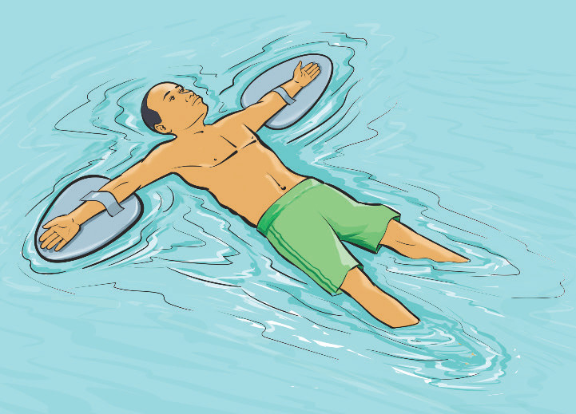
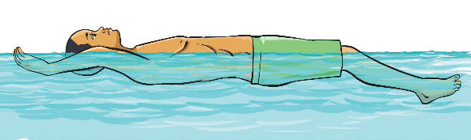

Floating
Floating is the ability to stay partially on the surface of water without sinking. It is a fundamental swimming skill that helps swimmers conserve energy, rest, and remain calm in the water. Mastering floating improves water confidence and safety, especially in deep water or emergencies. There are two main types of floating:
Back float
The back float is an essential skill that allows swimmers to stay on the water surface while breathing freely. For performing back float, follow these steps:
- (i)Lie on your back with the body fully extended and relaxed, Figure 3.11;
- (ii)Spread your arms slightly away from the body or stretch out for better balance;
- (iii)Legs remain straight and slightly apart or bent at the knees if needed for comfort;
- (iv)Tilt your head slightly backwards, with the ears submerged, allowing the face to stay above water; and
- (v)Breathe normally and remain as still as possible to maintain buoyancy.


Front float
The front float is a skill that helps swimmers prepare for various strokes and learn to balance in water. For performing front float, follow these steps:
- (i)Extend your body face-down in the water, keeping the arms and legs stretched out;
- (ii)Take a deep breath before submerging, allowing the body to stay buoyant;